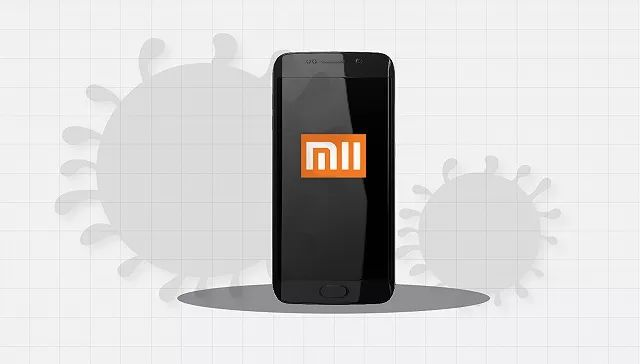
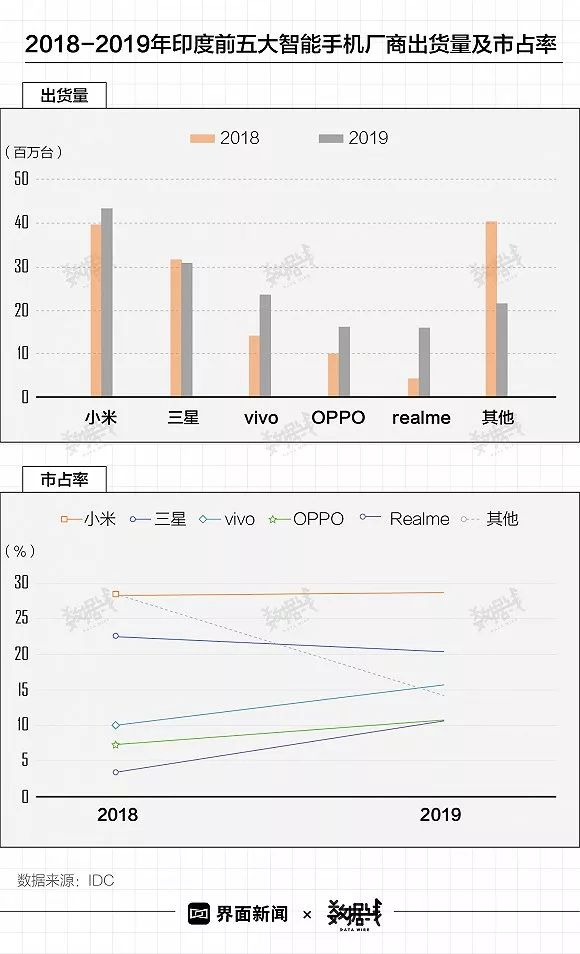

疫情冲击波：手机渠道商损失连锁反应
原文链接 备份链接 对于2019年就陷入负增长的中国手机零售市场来说，这场疫情无疑是雪上加霜。相对线下渠道的全面收缩，线上渠道亦受影响 文 |《财经》记者 陈潇潇 王凤 编辑 | 谢丽容 往年春节期间，从过完除夕到正月十五，历来是手机销售 …

记者：李胤烽 何苗 编辑：陈臣
“
在新冠肺炎疫情爆发后，2020年中国智能手机出货量可能降至3亿部，而在疫情爆发前的预测为3.4亿至3.6亿部。
”
2月13日下午，受新冠肺炎疫情影响，小米10系列手机线上直播发布，起售价3999元。但据此前小米管理层电话会议，在新冠肺炎疫情爆发后，2020年中国智能手机出货量可能降至3亿部（此前在疫情爆发前的预测为3.4亿至3.6亿部）。不仅是小米，苹果也受到了疫情的影响。天风国际分析师郭明錤近日发布报告指出，目前苹果有多款新品蓄势待发，但新冠肺炎疫情可能会扰乱其供应链，导致这些产品发布推迟。
目前，由于工厂关闭，产品发布和出货时间表将不同程度推迟。同时，疫情期间可能会产生额外的运营成本。华菁证券预计小米的智能手机业务难以保持8-9%的毛利率水平。
而中国手机市场已充满挑战。IDC数据显示，2019年中国智能手机市场出货量约3.7亿台，同比下滑7.5%。同年，小米手机出货量从2018年的5080万台降至4000万台，市占率从12.8%降至10.9%。

虽然小米不断刷新5G手机的最低价格，但其中国5G市场份额并不高。据IDC数据，2019年中国5G手机厂商市场份额中小米仅为3.5%。

由于中国市场出货量增长疲软，全球智能手机整体出货量也在下滑。IDC数据显示，2019年全球智能手机出货量相比2015-2018年的年均出货量有所下降。但自小米市场重心转移到海外以来，其全球表现突出，2019年智能手机出货量升至1.256亿台，全球市占率也升至9.2%。

印度，已经连续第二季度成为小米最大的市场。小米印度公司成立于2014年，在3年多的时间里，就超过三星实现了印度市场智能手机出货量排名第一。IDC数据显示，2019年小米在印度手机市场的市占率为28.6%，较2018年上升0.3个百分点。
但小米和其他品牌的差距正在缩小。其中，作为“同胞兄弟品牌”的vivo和OPPO两家品牌增速均呈现较快趋势。根据IDC数据，2019年vivo在印度市场的市场份额从10.1%升至15.6%，OPPO也从7.2%升至10.7%。

雷军直言：“小米10是小米十年集大成之作。”在“内忧外患”之际，这款集大成之作能为小米带来怎样的变化？
未经授权 禁止转载

原文链接 备份链接 对于2019年就陷入负增长的中国手机零售市场来说，这场疫情无疑是雪上加霜。相对线下渠道的全面收缩，线上渠道亦受影响 文 |《财经》记者 陈潇潇 王凤 编辑 | 谢丽容 往年春节期间，从过完除夕到正月十五，历来是手机销售 …
原文链接 备份链接 题图来源：Getty Images 记者：刘雨静 编辑：昝慧昉 “ 中国地区汉堡王的销售额占集团整体销售额的2%，目前还难以确定疫情对集团实际收入的营销。 ” 疫情之下，尽管已经关闭中国半数汉堡王门店，但其母公司RBI …
原文链接 备份链接 市场反馈认为，公共卫生事件对经济的影响有限；在应对疫情的关键时刻，政治和金融市场应对疫情展示出截然不同的态度 文 |《财经》特派记者 金焱 发自华盛顿 编辑 | 苏琦 2月11日，世界卫生组织通过社交媒体推特发布其确定 …
原文链接 备份链接 疫情的影响让很多公司都选择了在线办公，但这也催生出两种工作状态。有些人的工作，因为在线办公，自己比以往更有空间了；而有些人的工作，因为在线办公，变得无事可做。 来源：《潜望》 作者：濮祥 王潘 2月3日，原本是春节假期 …
原文链接 备份链接 来源：腾讯新闻《潜望》 栏目 作者：王潘 2020年元旦前后，武汉新型肺炎的新闻曝光，小米区域拓展部副总裁、武汉总部总经理刘国俊要求团队尽快备好口罩、药物和体温测量仪等可能有助于武汉当地员工防御病毒的措施。 “原本小米 …